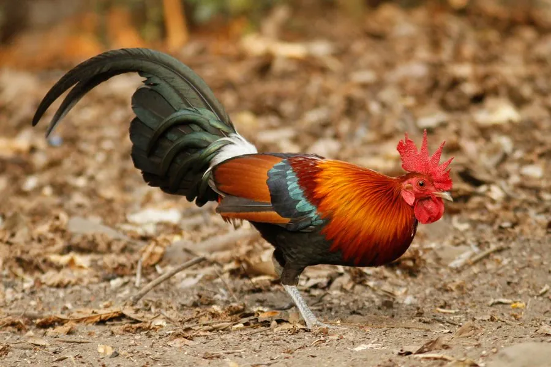

鸟类 · 动物界
红原鸡 Gallus gallus

家鸡的野生祖先，雄鸟披金红颈羽、尾羽镰刀状弯曲，清晨高声啼叫，栖于亚洲热带林缘，是研究家禽起源的关键物种。
- 分类
- 门脊索动物门纲鸟纲目鸡形目科雉科属原鸡属
- 栖息环境
- 热带雨林边缘、竹林、灌丛、次生林与农地交界
- 地理分布
- 印度、东南亚至中国云南、广西、海南等地
- 保护级别
- IUCN 无危（LC）；中国国家二级保护动物
物种志
红原鸡体形与家鸡相近但更轻盈，雄鸟体长 65–78 厘米（含尾），体重 0.7–1.4 千克，雌鸟约 40 厘米，体重 0.5–0.8 千克。雄鸟头顶具红色肉冠，喉下有肉垂，颈羽金黄至橙红、呈披针状，背与翼红褐，尾羽黑色带金属绿光，中央两枚尾羽延长成镰刀状弯曲；雌鸟体色以棕褐为主，密布黑褐细纹，伪装性强。
红原鸡分布于南亚、东南亚至中国南部，栖息于热带雨林边缘、竹林、灌丛与农地交界，多在林下地面活动，夜间飞到树上栖息。食性杂，取食种子、果实、嫩叶、昆虫、蠕虫和小型脊椎动物。繁殖期雄鸟以晨鸣宣示领域，常伴有一声短促的“切”音收尾，与家鸡啼声相似；每窝 5–7 枚卵，雌鸟孵卵约 18–20 天。它是家鸡的直接祖先，约八千年前在东南亚被驯化，野生种群因杂交与猎捕而面临基因污染。
形态与习性
- 体长雄鸟含尾约 65–78 cm，雌鸟约 40 cm
- 体重雄鸟约 0.7–1.4 kg，雌鸟约 0.5–0.8 kg
- 食性种子、果实、嫩叶、昆虫、蠕虫与小型脊椎动物
- 繁殖每窝 5–7 枚卵，雌鸟孵卵约 18–20 天
- 驯化约 8000 年前在东南亚被驯化为家鸡
- 识别特征雄鸟颈羽金黄橙红，中央尾羽呈镰刀状弯曲
- 栖息方式白天在林下地面觅食，夜间飞上树栖息
趣味知识
- 红原鸡是家鸡的直接野生祖先，八千年前在东南亚被驯化。
- 雄鸟的啼声与家鸡几乎一样，只是结尾更短促、更清亮。
- 野生红原鸡与散养家鸡杂交，正使纯种野生基因逐渐消失。